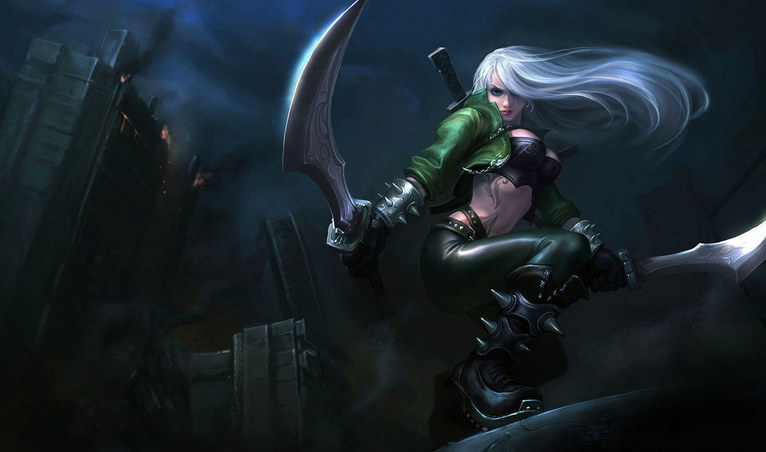
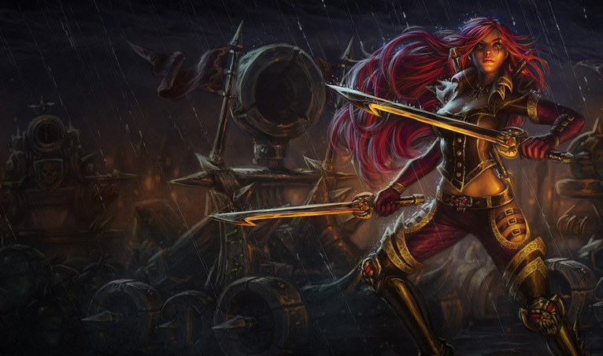
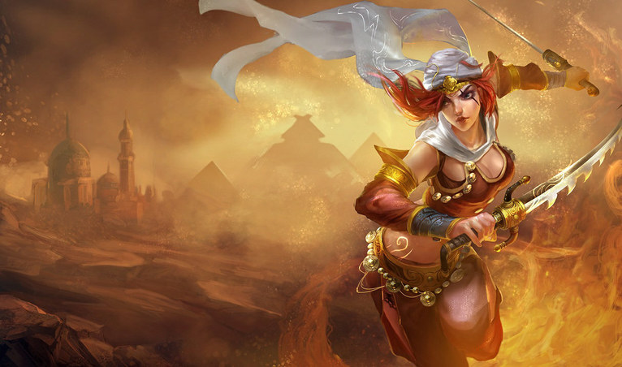
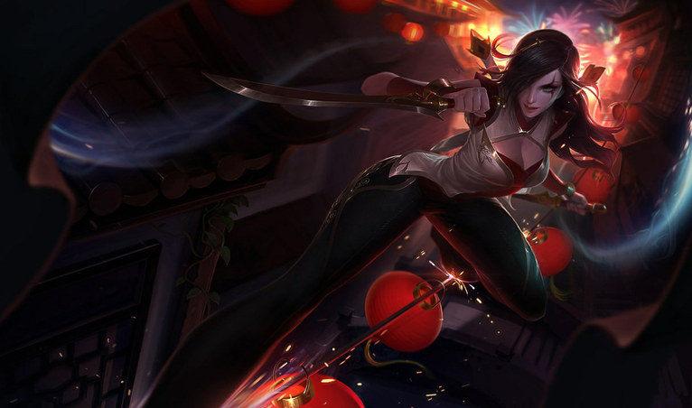
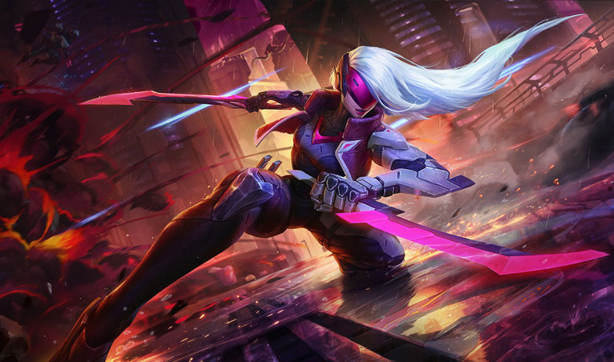
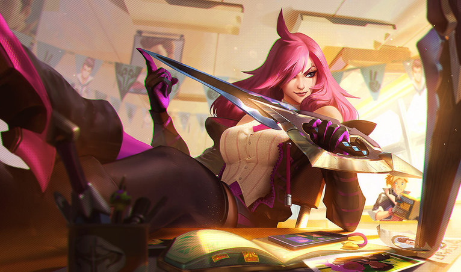
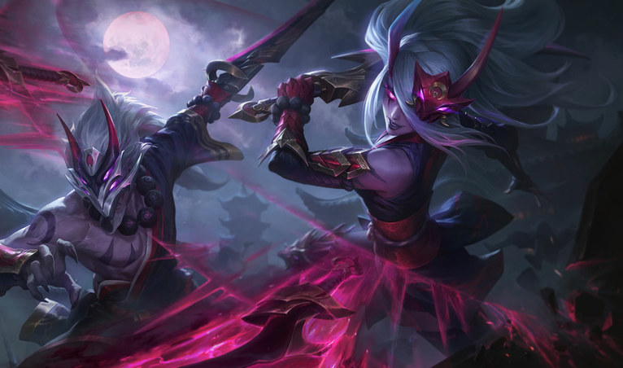
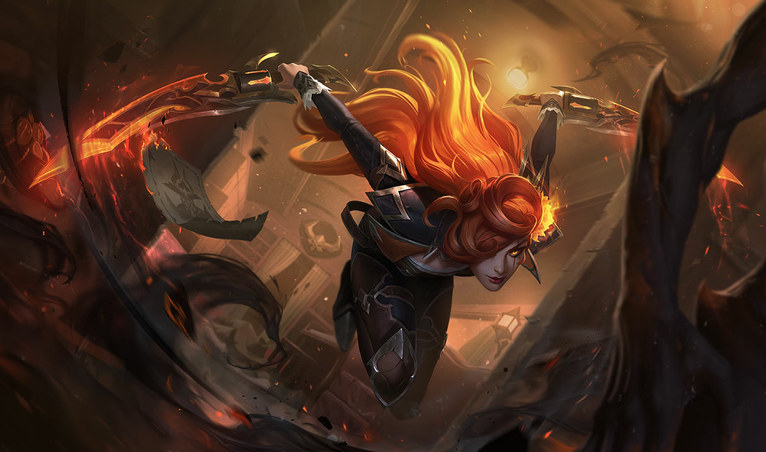
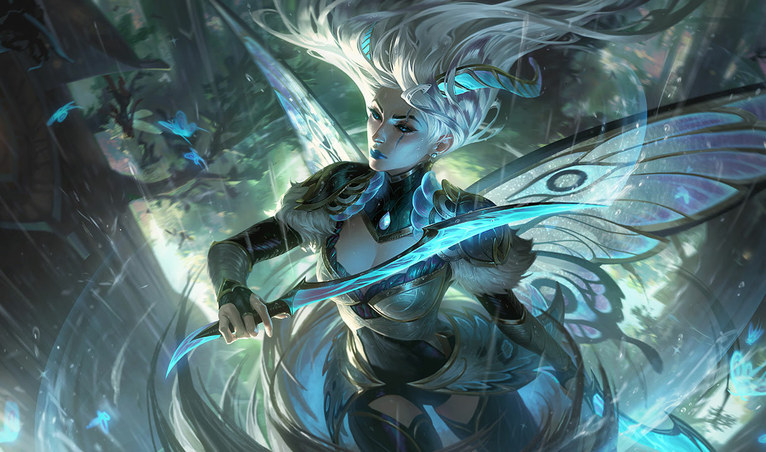
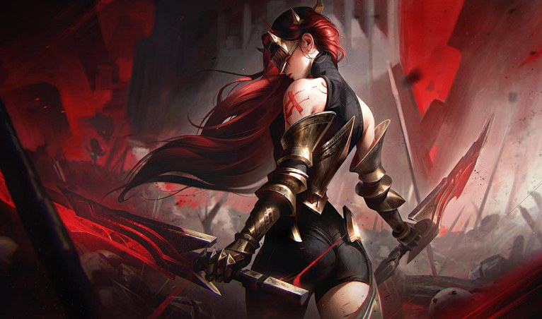

Cumplelolero · 19 sep 2009 — 2026
KATARINA17 AÑOS
La Daga Siniestra
Mid · Noxus · Casa Du Couteau
Primera vez en toda la serie
El número uno
del mundo es latino
#1
Del servidor del sur
12 367 424
puntos de maestría
WILD KAT
su nombre
906
nivel de maestría
649
de 802 partidas
Y ahora agárrense
HIERRO 1
84 LP · nunca ha salido de ahí
Bronce 4
S2025
Hierro 2
S2024 S3
Hierro 2
S2024 S2
Hierro 2
S2024 S1
Hierro 3
S2023 S2
Bronce 3
su pico de toda la vida
3 %
más bajo del servidor
Récord de toda la serie
20 skins, y 11 a la venta

Mercenaria
520 RP

Alto Mando
750 RP

Tormenta de Arena
975 RP

Reinos en Guerra
975 RP

PROYECTO
1350 RP

Academia de Combate
1350 RP

Luna de Sangre
1350 RP

Reina Guerrera
1820 RP · legendaria

La Forajida
1350 RP

Corte Feérica
1350 RP

Elegida del Lobo
1350 RP
~101 USD
13 140 RP · 6,3 días de salario
las otras nueve, fuera de tienda
las otras nueve, fuera de tienda
Pero wachen el detalle
EN BÓVEDA
Pétalos Primaverales
19 de febrero de 2026 · su skin más nueva
7 meses
y ya no la puedes comprar
Diecisiete años de la Daga Siniestra
Feliz cumpleaños,
Katarina
GIGI EASY
Tírenme un follow o les voy a meter la cuarta. Chao.